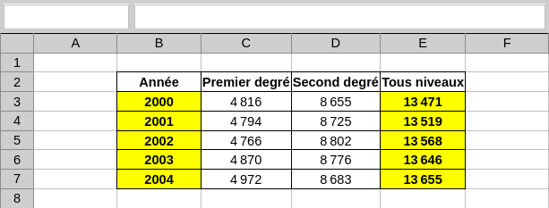

TP1 : Prise en main
💡 Ce TP est inspiré de sources en partie inconnues.Consignes
Consignes tableur
Vous travaillerez sur un fichier de tableur que vous téléchargerez en cliquant ici.
Chaque feuille correspond à un exercice. Vous devrez alors :
- écrire des formules dans les cellules jaunes.
- compléter les cellules oranges via la poignée de recopie.
Exercices
Exercice 1
Modifiez la feuille de calcul afin d'obtenir le tableau suivant :

💡 Vous penserez à utiliser la poignée de recopie.
Votre réponse :Exercice 2
Complétez la feuille de calcul de sorte à calculer le nombre total de jours de vacances universitaires.
💡 Vous noterez que la différence entre deux dates est classiquement exprimée en jours.
Votre réponse :Exercice 3
Complétez la feuille de calcul de sorte à calculer les prix TTC.
💡 Le prix TTC (toutes taxes comprises) est calculé à partir du prix HT (hors taxes) auquel on ajoute le montant de la TVA (un certain pourcentage du prix HT).
Votre réponse :Exercice 4
Complétez la feuille de calcul de sorte à produire une table de multiplication.
Votre réponse :